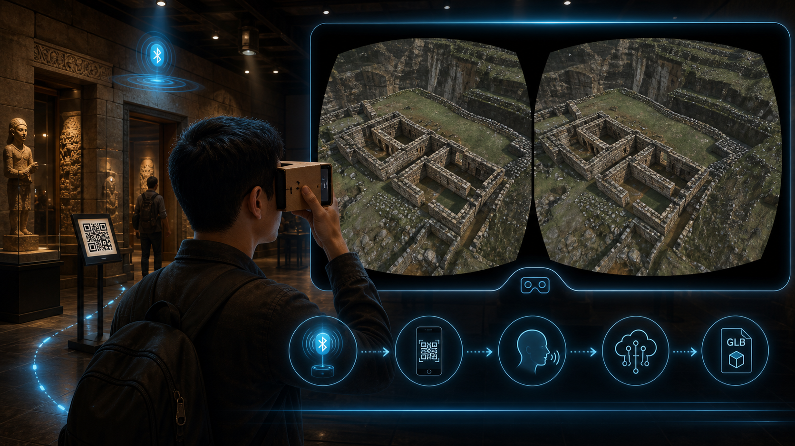

Experiencia inmersiva por sala

Representa el modo de sala inmersiva para visor tipo Cardboard: la app detecta el contexto de sala, carga una reconstruccion 3D y muestra una vista estereoscopica para recorrer el espacio.
Guia movil contextual e inmersiva para museos, con BLE, QR, voz, IA, visualizacion 3D y experiencia de sala en modo inmersivo.
MuseIQ es un prototipo movil para transformar la visita a museos en una experiencia contextual e interactiva. La aplicacion prioriza un flujo AR-first: el visitante entra al museo, selecciona el contexto, recibe informacion de sala/obra, puede escanear QR, preguntar por voz o texto, escuchar narracion, ver modelos 3D y acceder a una experiencia inmersiva basada en una reconstruccion 3D de sala.
El proyecto combina una app Expo/React Native con sensores del telefono, BLE para deteccion de sala, flujo QR para identificar obras, integracion con MuseRAG, un modulo IoT con ESP32/MicroPython para beacons BLE y un modulo obj-3d para preparar activos 3D de obras. El prototipo actual ya cuenta con navegacion principal, pantallas de estado, modo tecnico, flujo AR temporal, fallback 3D y una sala inmersiva experimental con archivo lugar.glb.
MuseRAG funciona como la capa de inteligencia contextual del proyecto: la app envia preguntas del visitante junto con museo, sala, obra, modo de respuesta y contexto curatorial de la pieza; el backend responde con texto/Markdown, fuentes documentales, imagenes asociadas y metricas de recuperacion/generacion. Esto permite que las respuestas no sean genericas, sino apoyadas en contenido del museo.
obj-3d complementa la app como pipeline de digitalizacion 3D: actualmente concentra una coleccion local de 25 modelos GLB de referencia y se proyecta como el flujo para capturar obras mediante fotografias, obtener una reconstruccion o imagen 3D asistida por IA y refinarla en Blender antes de exportarla a formatos optimizados para MuseIQ.
/api/preguntar con timeout, cancelacion y manejo de errores..glb o .obj optimizados para visor 3D, AR y experiencias inmersivas.
Imagen de referencia incluida en el repositorio: docs/screenshots/muse-experience.png.
Las siguientes imagenes resumen las tres capacidades clave que se estan integrando en MuseIQ: experiencia inmersiva, generacion/preparacion de modelos 3D y respuestas contextualizadas con MuseRAG.

Representa el modo de sala inmersiva para visor tipo Cardboard: la app detecta el contexto de sala, carga una reconstruccion 3D y muestra una vista estereoscopica para recorrer el espacio.

Resume el objetivo de obj-3d: capturar fotografias de obras, generar una reconstruccion asistida por IA, refinarla en Blender y exportar modelos .glb o .obj optimizados para la app.

Explica el proposito de MuseRAG: recibir una pregunta del visitante con contexto de museo, sala y obra; consultar fuentes curatoriales, catalogos, imagenes y base vectorial; y devolver una respuesta sustentada con fuentes.
Se desarrollo el prototipo funcional de MuseIQ como guia movil contextual para museos. La app ya implementa el flujo principal documentado en el proyecto: inicio, seleccion de museo, preparacion de visita, Home AR, exploracion de sala, escaneo QR simulado, obra identificada, detalle de obra, carga AR, AR activo temporal, hotspots, audio, preguntas con IA y fallback a visor 3D.
Se integro el cliente de MuseRAG en lib/muserag-api.ts. La app resuelve la URL del backend desde EXPO_PUBLIC_MUSERAG_URL o desde la configuracion de Expo, arma el payload para /api/preguntar, maneja timeout de 45 segundos, cancelacion de solicitudes, errores de red y parsing de JSON.
El flujo de chat usa MuseRAG desde features/chat/hooks/use-artwork-chat-controller.ts. Cuando el usuario pregunta por texto o voz, se envia la pregunta con museo, sala, obra, modo, session_id y artwork_context con titulo, autor, periodo, tecnica, resumen, contexto, relacion con sala, pistas de recorrido, etiquetas, obras cercanas y preguntas sugeridas.
La respuesta se renderiza en Markdown, guarda historial local, registra analitica de preguntas y muestra fuentes. Las fuentes incluyen fragmentos, score, metadata, etiquetas, paginas o referencias visuales, y pueden abrir imagenes asociadas mediante carrusel/visor de imagenes.
Se identifico y organizo el modulo local obj-3d, que actualmente contiene 25 archivos GLB con un peso aproximado de 85 MB. Este modulo se documenta como base para el flujo de digitalizacion de obras: captura fotografica, reconstruccion asistida por IA, refinamiento en Blender y exportacion de modelos listos para la app.
Tambien se avanzo en la modularizacion de la app: las rutas de app/ se estan manteniendo como entradas finas de Expo Router y la logica visual/funcional se agrupa en features/, hooks/, providers/ y componentes reutilizables en components/museiq/. Esta estructura queda documentada en ARCHITECTURE.md y README-DEV.md.
En la capa de experiencia inmersiva se incorporo una capability local para SALA_1, que permite simular una sala con modo inmersivo mientras BLE real sigue en integracion. La app precarga assets/models/immersive/lugar.glb, abre sala-inmersiva, renderiza el entorno 3D en modo SBS para visor tipo Cardboard y cuenta con un recorrido automatico basico para dispositivos que no tienen sensores suficientes para tracking fluido.
En paralelo se mantuvo el modulo IoT iot-museiq, basado en ESP32/ESP32-C3 con MicroPython, para emitir advertising BLE con datos de sala y dispositivo. Esto sirve como base para detectar contexto fisico del visitante dentro del museo.
El principal reto tecnico reciente estuvo en la experiencia inmersiva 3D. Algunos dispositivos Android de prueba no exponen DeviceMotion ni giroscopio, por lo que el tracking de cabeza no puede ser fluido como en un visor VR nativo. Se implementaron fallbacks con acelerometro y magnetometro, pero la frecuencia de la brujula puede ser baja y provocar una sensacion de movimiento limitado.
En MuseRAG, el reto principal es que el telefono no puede usar localhost para conectarse al backend; necesita una IP LAN accesible por Wi-Fi. Por eso el proyecto documenta EXPO_PUBLIC_MUSERAG_URL, resolucion de host y troubleshooting para casos en los que Expo recarga mal la variable o el backend no esta levantado.
Tambien se debe consolidar el contrato entre MuseRAG y la experiencia AR/3D. Hoy MuseRAG responde preguntas y fuentes, pero todavia falta definir formalmente como entregara recursos como model_3d, hotspots, room_model_3d o capacidades inmersivas por sala.
En obj-3d, el problema pendiente es convertir una coleccion de modelos y pruebas en un pipeline reproducible. La calidad final dependera de la iluminacion, cantidad de fotografias, cobertura de angulos, superficies reflectivas, limpieza de malla, reduccion de poligonos, texturas y validacion cultural de cada reconstruccion.
Tambien se identificaron problemas de rendimiento y carga con modelos GLB pesados. Para mitigarlo, se trabajo en cache/preparacion del modelo, lectura local del GLB y reduccion de bloqueos durante la carga. Ademas, el modo SBS puede generar deformaciones visuales si la camara se acerca demasiado al modelo o si la separacion entre ojos es alta para el tamano/escala del entorno.
Otro desafio es la integracion BLE en condiciones reales. Por ahora la deteccion de sala y la experiencia inmersiva se simulan con datos locales o accesos manuales, ya que aun falta validar beacons fisicos en sala con RSSI, multiples nodos por sala y protocolo final de identificacion.
Finalmente, el QR real con camara, AR real con ARCore/ARKit o libreria equivalente y la descarga dinamica de modelos 3D por obra siguen pendientes. Actualmente existen pantallas, overlays y estados simulados que permiten validar la experiencia de usuario antes de conectar todas las integraciones definitivas.
obj-3d definido como pipeline de fotografia a modelo 3D con apoyo de IA y Blender.lugar.glb.El roadmap registra como cubiertas las fases de base visual, navegacion AR-first, estados principales del Home, QR simulado, obra identificada, carga AR, AR activo temporal, chat IA como modal, audio como sheet y la primera version de sala inmersiva 3D.
model_3d, hotspots, room_model_3d y immersive_mode.obj-3d: numero minimo de fotos, angulos, iluminacion, escala y checklist de calidad..glb optimizado.obj-3d con metadata de obra para que QR, MuseRAG, AR y visor 3D usen el mismo identificador.model_3d, hotspots, immersive_mode y room_model_3d.SALA_1.Nos gustaria recibir orientacion sobre que criterios tendran mayor peso en la evaluacion: impacto cultural/social, innovacion tecnica, validacion con usuarios, calidad de la demo funcional o escalabilidad del prototipo. MuseIQ cruza varias areas: app movil, IoT/BLE, IA conversacional, voz, visualizacion 3D y experiencia inmersiva; por ello seria valioso saber que dimensiones conviene priorizar para la siguiente presentacion.
Tambien seria util confirmar si el concurso valorara mas una demo instalada en dispositivo real, un video corto de recorrido o una explicacion tecnica con arquitectura y roadmap. Actualmente el equipo puede mostrar una app navegable, APK de desarrollo, documentacion y flujo funcional simulado, mientras se completan las integraciones de BLE/QR/AR reales.
Se recomienda adjuntar este PDF como documento principal de respaldo y usar los siguientes enlaces como evidencia complementaria:
| Recurso | Enlace | Uso sugerido |
|---|---|---|
| Repositorio App MuseIQ | https://github.com/eduardo202020/iot | Codigo fuente principal de la aplicacion movil. |
| Repositorio IoT/BLE | https://github.com/eduardo202020/iot-museiq | Codigo MicroPython para ESP32/ESP32-C3 y pruebas BLE. |
| Repositorio MuseRAG | https://github.com/eduardo202020/museRAG | Backend RAG local con FastAPI, Chroma y LM Studio para responder preguntas contextualizadas por museo, sala y obra. |
| Carpeta local obj-3d | ../../../obj-3d/ | Coleccion local de modelos GLB y base del pipeline de fotos a modelo 3D con IA y Blender. Pendiente de publicar como repositorio o integrarse al repo principal. |
| Visual experiencia inmersiva | immersive-experience-concept.png | Imagen conceptual para explicar el modo Cardboard/SBS y recorrido inmersivo de sala. |
| Visual obj-3d | obj-3d-experience-concept.png | Imagen conceptual del flujo fotos, IA, Blender y exportacion de modelo 3D. |
| Visual MuseRAG | muserag-experience-concept.png | Imagen conceptual del flujo pregunta, contexto, fuentes, recuperacion RAG y respuesta sustentada. |
| APK Android Dev Client | Build EAS Android | Instalacion de prueba en Android con permisos nativos actualizados. |
| README App | README.md | Vision general, flujo implementado y estado actual. |
| README Dev | README-DEV.md | Setup tecnico, BLE, MuseRAG, desarrollo y troubleshooting. |
| Cliente MuseRAG | lib/muserag-api.ts | Resolucion de URL, payload contextual, consulta a /api/preguntar, timeouts y errores. |
| Controlador Chat/MuseRAG | use-artwork-chat-controller.ts | Orquesta preguntas, voz, contexto de obra, respuesta, fuentes, historial y analitica. |
| Roadmap | ROADMAP.md | Cobertura por flujo, fases tecnicas y proximos pasos. |
| Arquitectura | ARCHITECTURE.md | Estructura modular y convenciones de refactor. |
| Flujo IoT | flujo.md | Flujo de trabajo para pruebas ESP32/MicroPython. |
Nota: si el formulario permite un solo archivo de hasta 10 MB, se recomienda subir este PDF. Si permite enlaces adicionales, incluir los repositorios y el APK de EAS. No se recomienda subir el APK directamente porque probablemente excede el limite de peso.
museiqApp/README.md: vision general, flujo visible, estado actual y tecnologias.museiqApp/README-DEV.md: alcance tecnico, setup, BLE, development build y prioridades.museiqApp/ROADMAP.md: fases, cobertura por pantallas y proximos pasos.museiqApp/ARCHITECTURE.md: arquitectura modular y convenciones de refactor.museRAG/README.md: backend RAG local, contrato /api/preguntar, fuentes indexadas y salida con fuentes/imagenes.obj-3d/: inventario local de 25 modelos GLB para pruebas de visualizacion 3D y base del futuro pipeline de digitalizacion.iot-museiq/README.md: modulo BLE con ESP32/ESP32-C3 y formatos de advertising.iot-museiq/flujo.md: flujo de trabajo diario para cargar y probar firmware MicroPython.{kind=link}